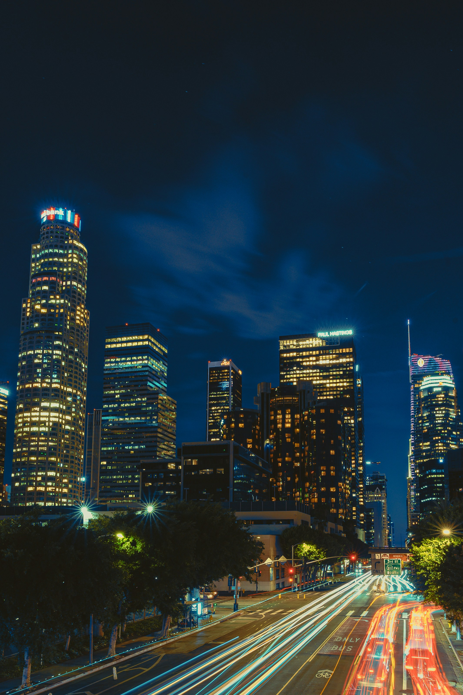

Los Angeles
Los Angeles, also known as the City of Angeles, was incorporated on April 4th, 1850. It is a sprawling urban area located in Southern California. The current population of Los Angeles is 3.8 million people with an average income of $76,135 which is higher than the statewide average income of $73,220.
Hollywood

Top 5 grossing films of all time - Box Office Mojo
- Avatar
- Avengers:End Game
- Avatar:The Way of Water
- Titanic
- Star Wars Episode VII - The Force Awakens
Downtown
Downtown Los Angeles is a dynamic hub where history meets modernity, offering a rich blend of culture, architecture, and entertainment. Explore the stunning Art Deco buildings that line the streets, such as the iconic Bradbury Building, or admire the contemporary design of the Walt Disney Concert Hall. Discover vibrant neighborhoods like the Arts District, filled with murals and galleries, and indulge in diverse culinary delights at bustling markets like Grand Central Market. With its thriving nightlife, stylish rooftop bars, and cultural institutions like The Museum of Contemporary Art (MOCA), Downtown LA invites visitors to experience the city's eclectic spirit and ever-evolving landscape.

Venice Beach
Venice Beach, California, is a lively coastal paradise known for its eclectic vibe and artistic spirit. Famous for its picturesque boardwalk, visitors can soak in the sun while watching street performers, artists, and skateboarders showcase their talents. Stroll past colorful murals and unique shops, or relax on the sandy shores with the iconic Muscle Beach gym as a backdrop. The nearby Venice Canals, inspired by Italy’s waterways, offer a serene escape for a leisurely walk. With its laid-back atmosphere, vibrant culture, and stunning sunsets over the Pacific, Venice Beach captures the essence of California’s beach lifestyle, making it a must-visit destination for anyone seeking fun and inspiration.